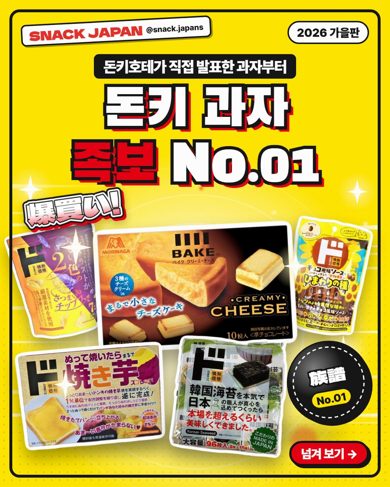
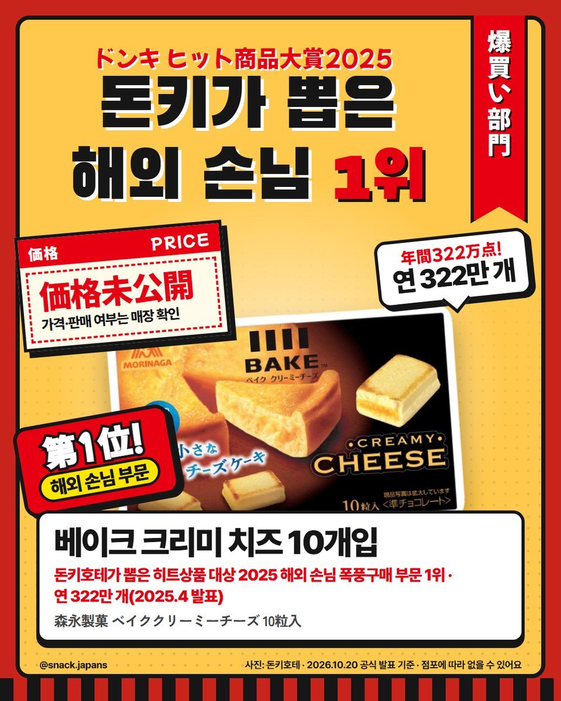
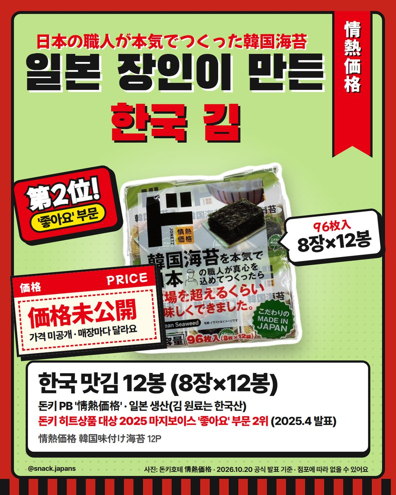
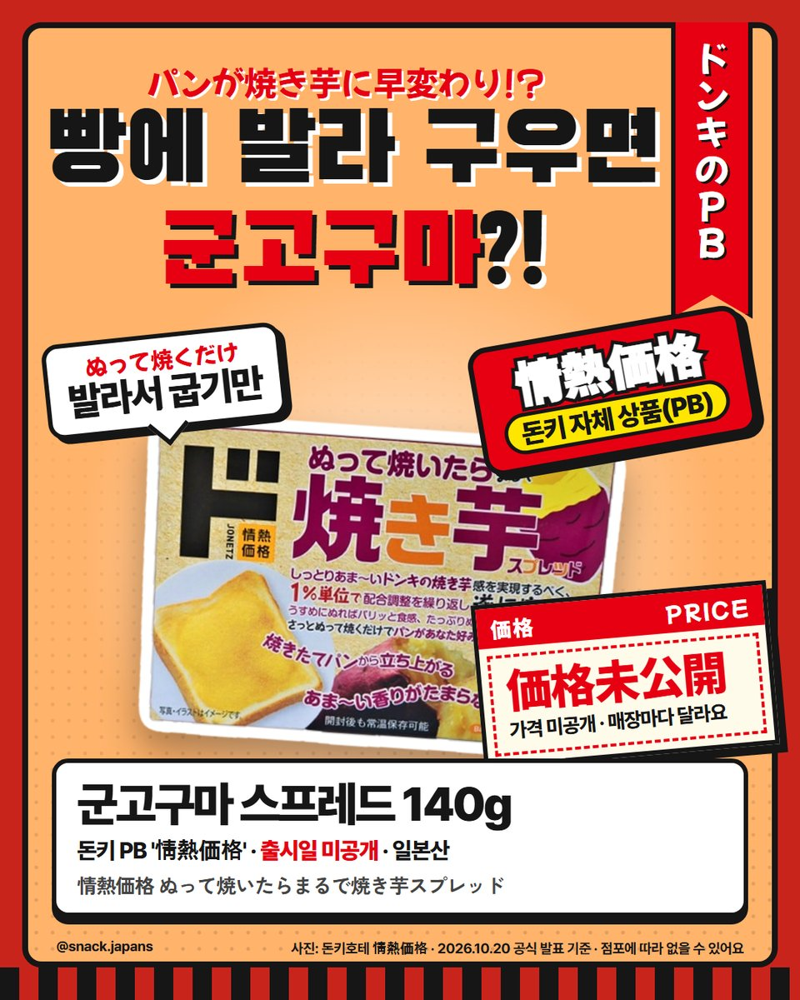
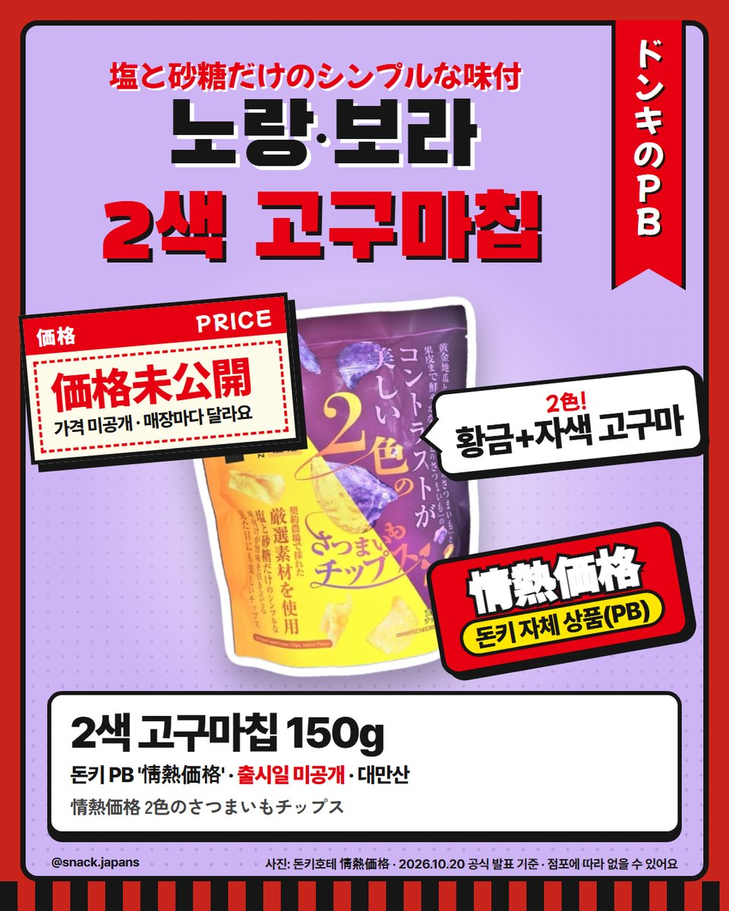
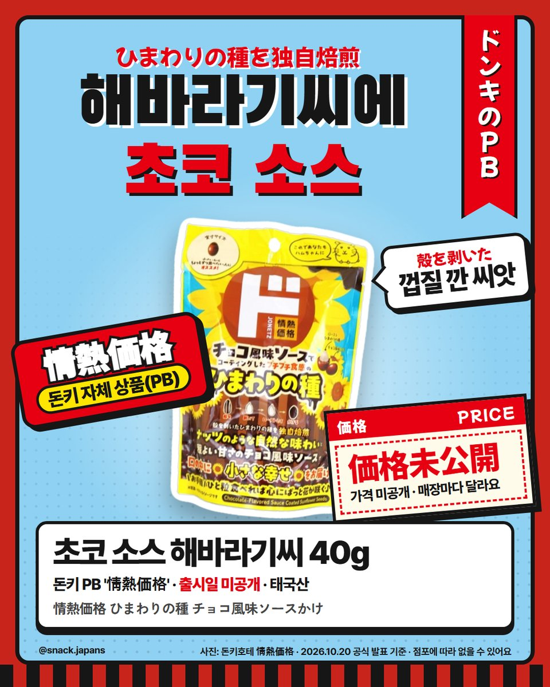
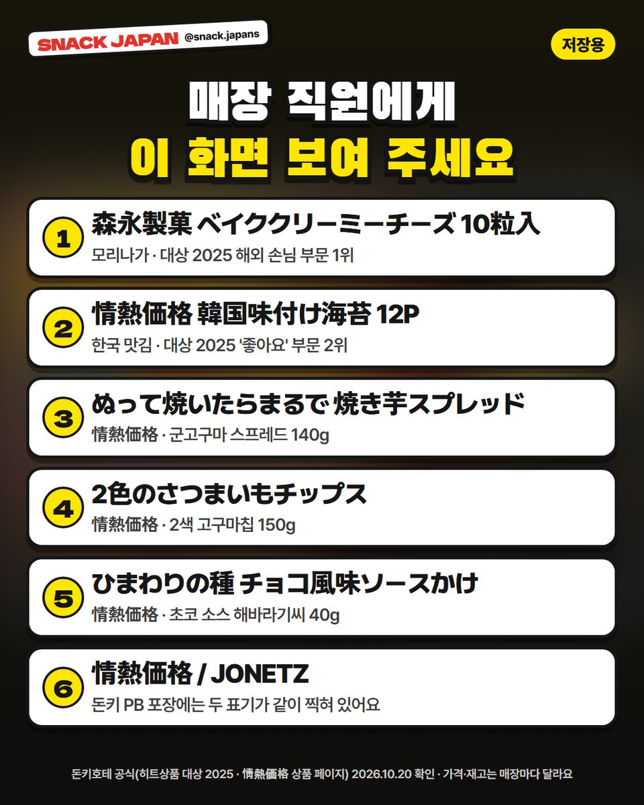

돈키호테 과자 쇼핑리스트 족보 No.01, 돈키가 뽑은 해외 손님 1위부터 PB 과자까지
돈키 과자 코너에서 길 잃지 않게! 돈키호테가 직접 발표한 히트상품 대상 과자와 돈키 자체 상품(PB) 과자 5가지.
돈키호테 과자 코너에서
길 잃어 본 사람? 🙋
뭘 살지 모르겠다면
돈키호테가 직접 발표한 과자부터 보세요!
SNACK JAPAN 족보 No.01, 돈키호테 편이에요 🛒


1. 베이크 크리미 치즈 10개입 (모리나가제과)
돈키호테가 뽑은 히트상품 대상 2025 해외 손님 폭풍구매 부문 1위 · 연 322만 개(2025.4 발표)
돈키호테 특설 페이지에는
중국·한국 등의 인플루언서가 '돈키에서 사야 할 과자'로도 소개했다고 나와 있어요.
- 일본 이름: 森永製菓 ベイククリーミーチーズ 10粒入
- 상 기준: 2024년 1월~2025년 1월에 팔린 상품
- 참고: 지금 가격·판매 여부는 공식 발표가 없어서 매장 확인!

2. 한국 맛김 12봉 (情熱価格)
같은 상 마지보이스 '좋아요' 부문 2위예요 (2025.4 발표).
돈키호테는 '일본 장인이 진심으로 만든 한국 김'이라고 소개해요.
- 8장×12봉 (96장)
- 일본 생산, 김 원료는 한국산
- 일본 이름: 情熱価格 韓国味付け海苔 12P

3. 군고구마 스프레드 140g (情熱価格)
빵에 발라 굽기만 하면
내 취향 군고구마로 변신한대요 (돈키호테 설명).
- 일본산
- 일본 이름: ぬって焼いたらまるで焼き芋スプレッド

4. 2색 고구마칩 150g (情熱価格)
황금 고구마 + 자색 고구마, 두 가지 색이에요.
소금과 설탕으로만 간했대요 (돈키호테 설명).
- 대만산
- 일본 이름: 2色のさつまいもチップス

5. 초코 소스 해바라기씨 40g (情熱価格)
껍질 깐 해바라기씨를 돈키만의 방식으로 볶아서
초코 풍미 소스를 입혔대요 (돈키호테 설명).
- 태국산
- 일본 이름: ひまわりの種 チョコ風味ソースかけ

6. 매장 직원에게 이 화면 보여 주세요
상품 이름이 전부 일본어라 찾기 어렵잖아요?
마지막 카드를 저장해 두고
직원분께 보여 주면 돼요.
- 情熱価格 = 돈키호테 자체 상품(PB)
- PB 포장에는 'JONETZ' 표기도 같이 찍혀 있어요
총평
- 가격: 공식 발표가 없어서 매장마다 달라요
- 기준: 돈키호테 공식(히트상품 대상 2025 · 情熱価格 상품 페이지), 10월 20일 확인
- 참고: 히트상품 대상은 2025년 4월 발표예요. 지금 재고는 매장마다 달라요
- 추천: 돈키 가서 뭘 살지 고민되는 분, 고구마 과자 좋아하는 분
이 중 하나만 장바구니에 넣는다면 몇 번이에요? 🛒